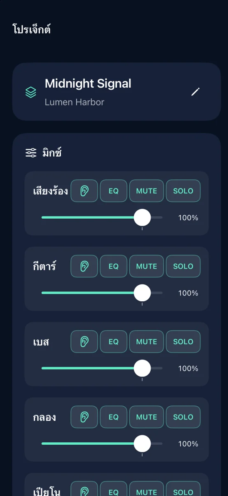
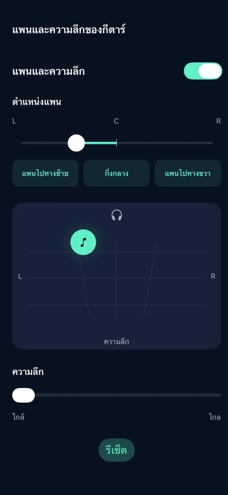
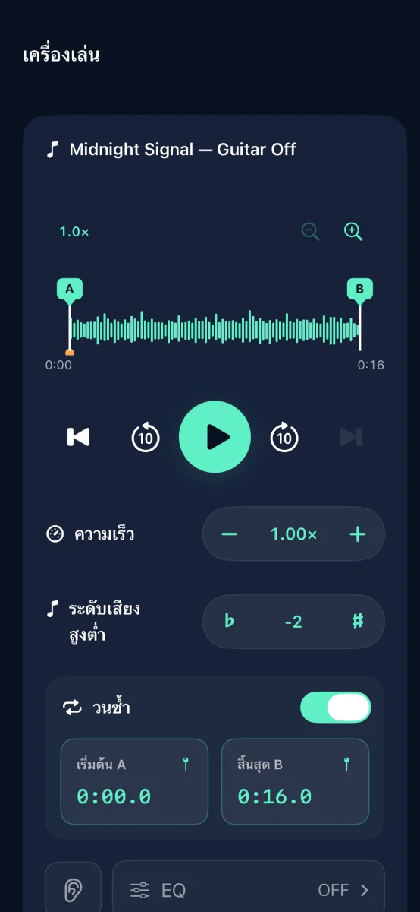

แอปแยกแทร็กเสียงและฝึกดนตรีสำหรับ iPhone

เปลี่ยนเพลงโปรดให้เป็นดนตรีประกอบสำหรับฝึก
แยกเพลงเป็น 6 แทร็ก แล้วปิดเสียงพาร์ตที่คุณจะเล่น
เร็ว ๆ นี้บน App Store

ฟีเจอร์



แอปแยกแทร็กเสียงและฝึกดนตรีสำหรับ iPhone
การแยกเสียงทำบนอุปกรณ์ ไม่ต้องมีบัญชี
ปรับระดับเสียง ปิดเสียง โซโล EQ แพนและความลึกของแต่ละแทร็ก แล้วส่งออกเป็น M4A, MP3 หรือ WAV
ทดลองใช้ฟรี 3 ครั้งที่แยกเสียงสำเร็จ ซื้อครั้งเดียวเพื่อแยกเสียงได้ไม่จำกัด ไม่ต้องสมัครสมาชิก
ไม่สามารถนำเข้าเพลงสตรีมมิงและเสียงที่มีการป้องกัน DRM ได้ ใช้เสียงที่คุณมีสิทธิ์ใช้งาน
ช่วยเหลือและสนับสนุน ↗